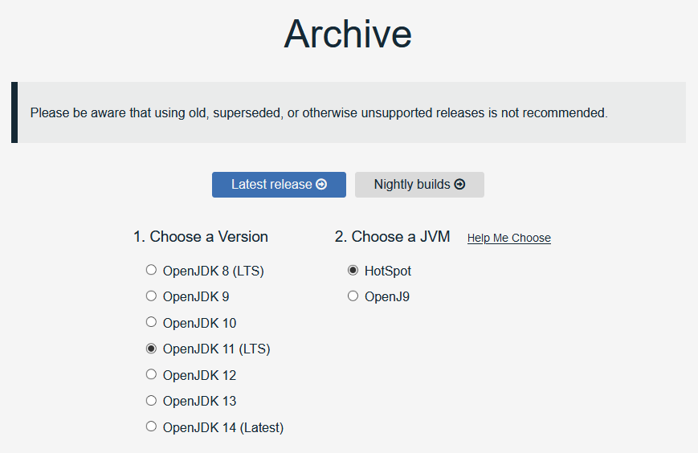
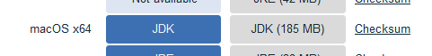
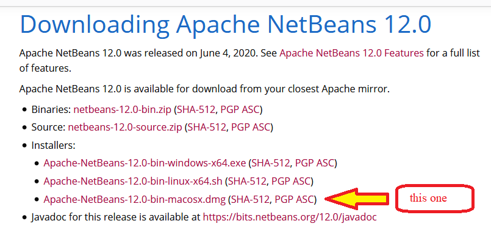

Download and Install NetBeans 12 for MacOS
1) install OpenJDK11 on your computer:
- Visit the AdoptOpenJDK Archive Web Page. On this page, in column 1, choose OpenJDK 11 (LTS), and in column 2, choose HotSpot, if they are not already selected.

- Scroll down on the page to the jdk-11.0.8+10 section, and click the JDK button for mac OS x64:

Choose to save the file.
- After downloading the .pkg file, visit the macOS pkg installer page and follow steps 2 through 5 of the GUI Installation instructions.
2) install Apache NetBeans 12 on your computer:
- Visit the Downloading Apache NetBeans 12.0 web page and click the link for the installer for Mac OSX:

- On the web page that appears, click the link at the top for the suggested mirror site for the download. Save the file.
- Run the installer .dmg file to install Apache NetBeans 12
Get Stuck?
Contact the IT Help Desk if you have any questions. On campus phone support x4357, off campus phone support 330-829-8726, or email the helpdesk at helpdesk@mountuinon.edu